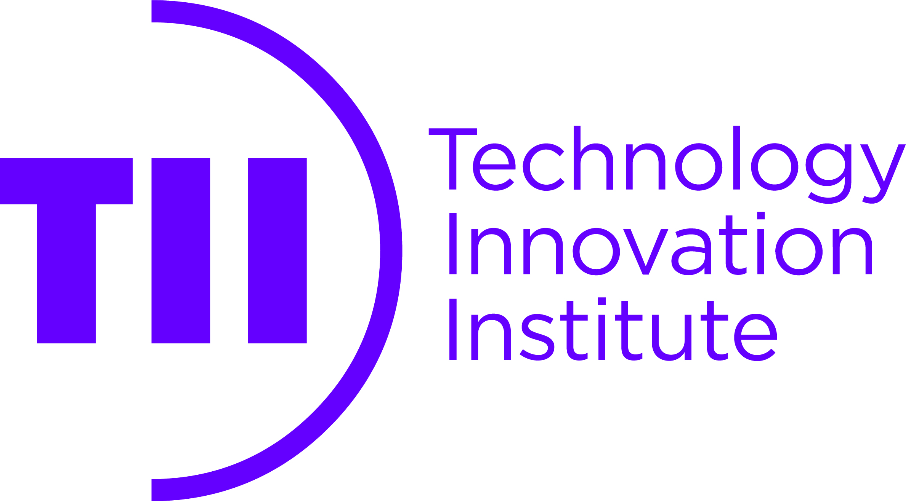

The seL4 Foundation thanks TII for becoming a Bronze sponsor of the seL4 Summit 2024.
The Technology Innovation Institute's (TII) Secure Systems Research Centre (SSRC) aims to drive end-to-end security and resilience in cyber-physical and autonomous systems that will ensure safety. The research center adopts an applied research approach, emphasizing practical applications. By employing seL4 as both a microkernel and a hypervisor, SSRC seamlessly aligns its dedication to security with the foundational technology crucial to achieving its objectives. This critical technology forms the cornerstone of secure software stacks for diverse edge devices, including secure communicators and drones. TII's research not only contributes to but propels the evolution of cutting-edge high-end edge device environments. TII's SSRC focus centers on resilience, isolation, trust, and security, all with the intention of fostering a more secure digital landscape.
See here if you are interested in sponsoring the seL4 Summit 2024.
